Your agent asks.
You decide.
From anywhere.
hitl is where an AI coding agent and its human meet. It asks you questions, shows you its work and waits at a gate for your OK. You answer, review, mark up screenshots and browse the code: in a browser tab at your desk, or on your phone when you step away. Everything you say lands in one feed the agent reads.
- Free and open source
- Runs on your computer
- Desktop, tablet and phone
- Works with Claude Code & any MCP agent
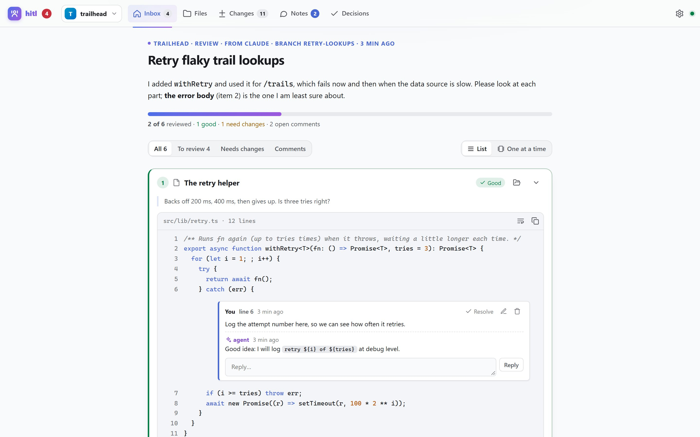
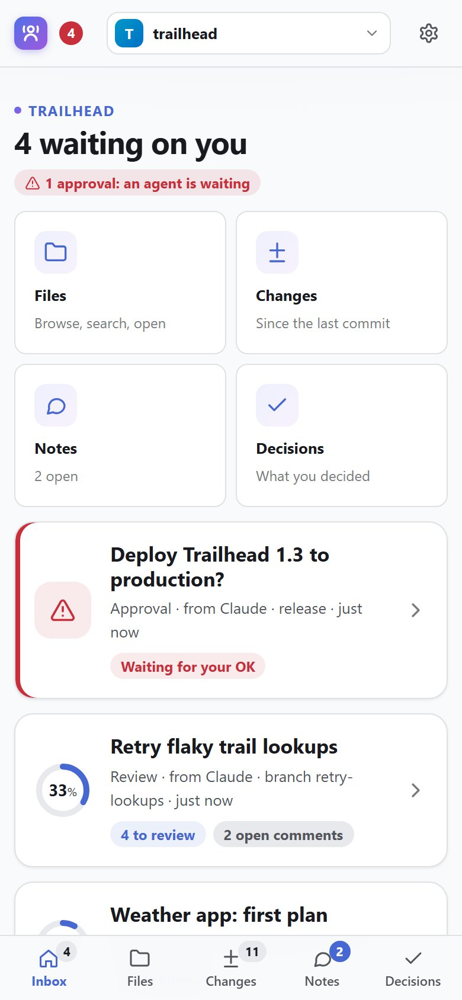
Stay in the loop
without sitting at the terminal
Agents work for an hour, then need one decision. hitl brings that decision to you, with everything you need to make it, and takes your answer back.
A real yes or no before anything risky
The agent wants to deploy, delete data or send something. It asks, you get a notification (on your desktop or your phone), you read what will happen and how to undo it, and tap Approve or Refuse. It waits until you do.
- A notification within seconds (ntfy or any webhook)
hitl approveexits 0 or 1, so scripts can gate on you too- An optional hook stops Claude finishing while an approval waits
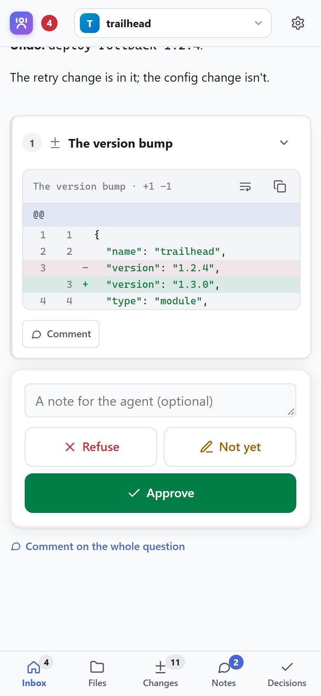
Review its work like a pull request, wherever you are
Files, diffs against main, proposed code, screenshots, diagrams, HTML mockups. Give each one Looks good, Needs changes or No, comment on any line, or draw around the part of a picture you mean.
- Swipe through them one at a time: right is good, left needs work
- Before and after: a slider for pictures, the changes for code
- Shown files are kept as they were, so later edits show up

Fifty questions, answered while you wait for coffee
Instead of one question at a time in a chat, the agent writes them all down: grouped, each with a recommendation and why it matters, with the pictures and diffs you need to decide.
- Take every recommendation, then change the few you disagree with
- Follow-up questions open as you answer
- Blocking ones are marked; the agent works on the rest
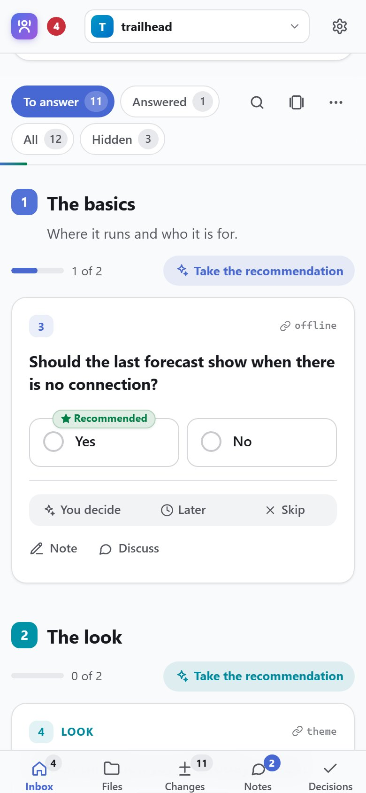
The whole project at hand, and a way to say “fix this”
Browse and search the code with git colours, diffs and history; markdown, Mermaid, images and CSVs drawn properly. Click or tap any line or picture to leave the agent a note, with a screenshot or a photo if it helps.
- Big files and folders open quickly
- Notes come back resolved, with what the agent did
- Every decision you make is searchable, so it isn't asked twice
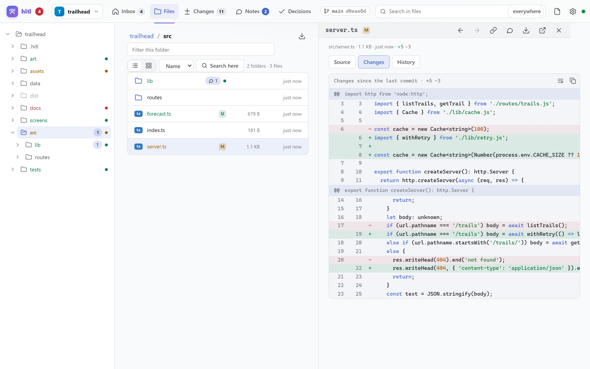
One inbox for everything waiting on you
Every project on one page, most urgent first. Side by side on a big screen; on a phone, add it to your home screen and it opens like an app.
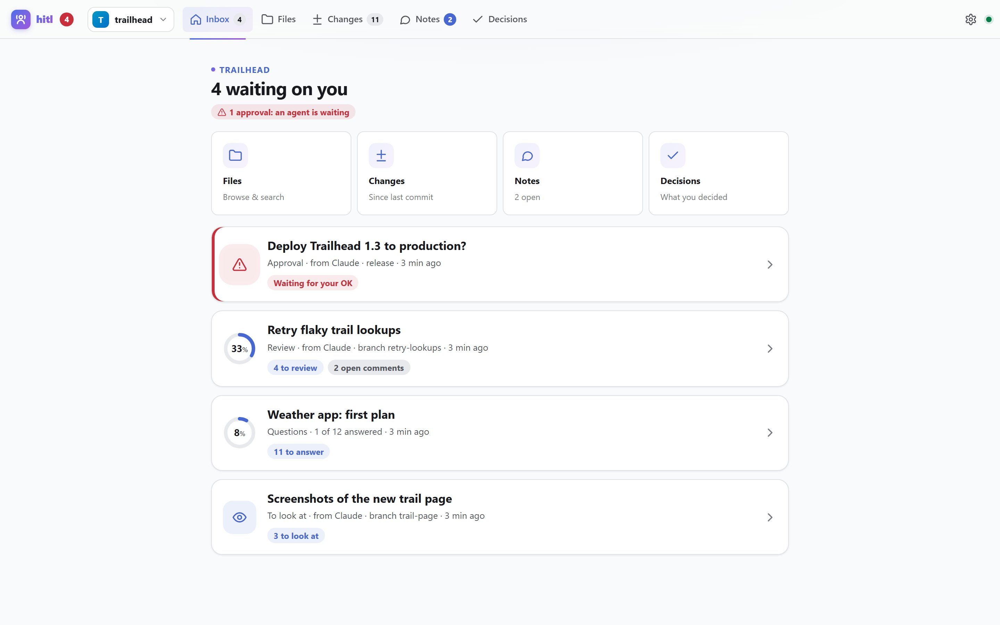
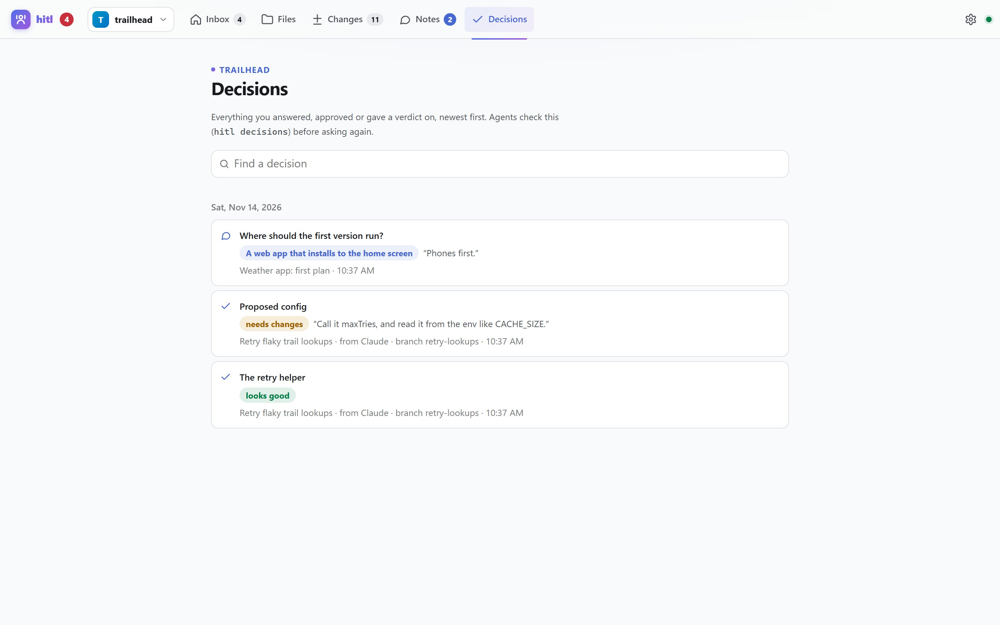
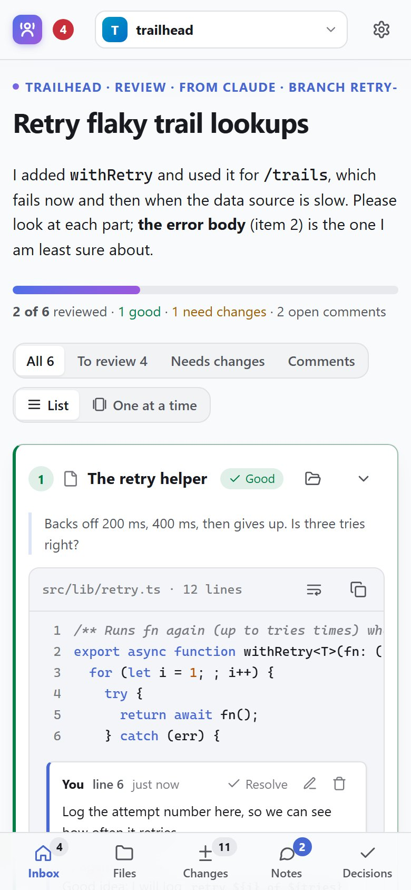
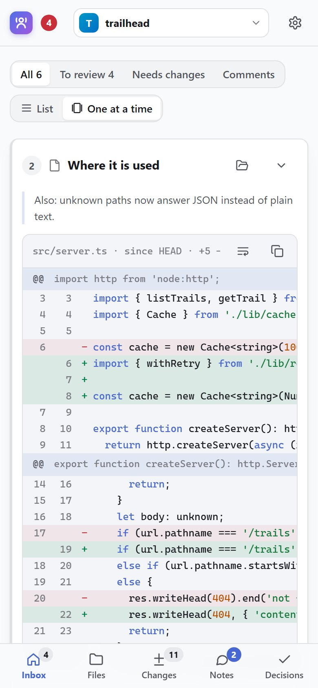
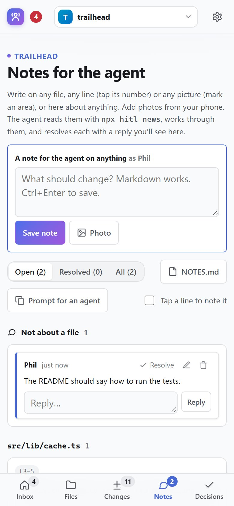
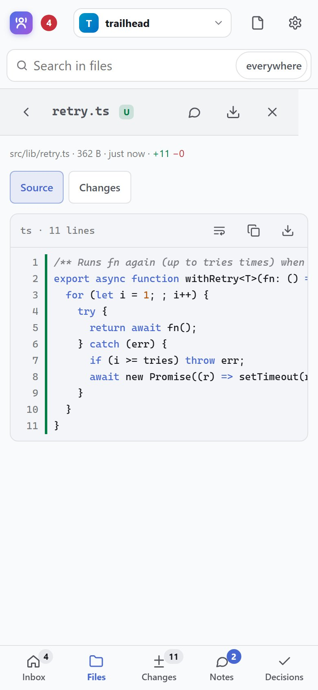
Four steps, no context switching
The agent asks
Questions, a review, or an approval: with the MCP tools or one CLI command. Each is its own file in .hitl/.
You get a ping
One notification on your desktop or phone, with a link straight to it. Over your Wi-Fi or Tailscale, behind a token.
You decide
Answer, review, mark up, approve. At your own pace; it saves as you go.
It reads only what's new
hitl news gives the agent just what changed, compactly, then it marks each one done.
For you, and for your agent
The CLI and the MCP server do the same things. npx hitloop --help lists every option.
npx hitloop initOnce per project: the .hitl folder, the MCP server for Claude Code, a note in CLAUDE.md.
npx hitloopStart the page for every project. It prints links for this computer and your phone (LAN and Tailscale).
npx hitloop notify ntfyNotifications on your phone or desktop, through the free ntfy app. Or notify webhook <url>.
npx hitloop hooks on --stopOptional: don't let Claude finish while an approval or a blocking question waits.
npx hitloop importComing from questionme or folderview? Brings in .questionme/ and .review/.
npx hitloop approve "Deploy 2.4.0?" --details "Restarts the API" --timeout 30mAsk yes or no and wait. Exits 0 approved, 1 refused, 2 no answer yet.
npx hitloop show src/login.tsx screens/login.png --mode review --title "Login, round 2"Put files in front of the human for a verdict on each. git diff | npx hitloop show - works too.
npx hitloop ask plan --file questions.jsonA set of questions, with options, recommendations and why each matters.
npx hitloop wait --anyRun it in the background: it exits, waking the agent, once the human has said something.
npx hitloop newsEverything new since the agent last read: answers, verdicts, comments, notes.
npx hitloop resolve c12 --note "Fixed in src/api.ts"Close the loop: the human sees what was done. ack for answers, reply to talk back.
npx hitloop decisions authWhat the human decided before, so it isn't asked twice.
claude mcp add --scope user hitl -- npx -y hitloop@latest mcpThe MCP server for Claude Code, in every project (hitl init adds it for you). Its tools:
news · wait · status · get_linkRead what's new, wait for the human, see what's open, get the link to send.
show · approve · add_questionsAsk for a review, an approval or answers. Each call makes its own request, so agents never overwrite each other.
get_feedback · get_answers · notes · decisionsOne review's verdicts and comments, one set's answers, the human's notes, past decisions.
ack · resolve · replyMark things done with a note the human sees, and talk back on any thread.
update_item · update_review · update_question · …Change what was asked; earlier answers to changed things are flagged for another look.
Teach your agent when to ask you
A skill tells Claude when to use hitl (lots of questions, anything to review, anything risky) and exactly how. Copy it, or download it into your skills folder.
mkdir -p ~/.claude/skills/hitl && curl -fsSL https://clickermonkey.github.io/hitloop/SKILL.md -o ~/.claude/skills/hitl/SKILL.md
Loading the skill…
Nothing leaves your network
Runs on your computer
One small Node server for all your projects. No account, no cloud, no runtime dependencies.
Saved in your project
Plain JSON and markdown in .hitl/. Commit it, read it, grep it. Every request is its own file.
A token by default
Reachable from your other devices over your Wi-Fi or Tailscale, but every request needs the token. --local for this computer only.
Agent output is untrusted
Markdown is sanitised, HTML mockups are sandboxed with no scripts, files can't run script on the page.
Secrets stay hidden
.env, keys and anything outside the project are never served, even through a link.
Any agent
An MCP server for Claude Code and other MCP clients, and a CLI any agent or script can run.